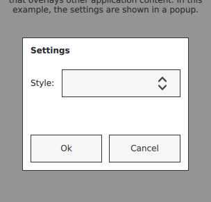

Popup Controls
Popup dialog with standard buttons and a title, used for short-term interaction with the user | |
Side panel that can be opened and closed using a swipe gesture | |
Popup that can be used as a context menu or popup menu | |
Base type of popup-like user interface controls | |
Provides tool tips for any control |
Each type of popup control has its own specific target use case. The following sections offer guidelines for choosing the appropriate type of popup control, depending on the use case.
Drawer Control
Drawer provides a swipe-based side panel, similar to those often used in touch interfaces to provide a central location for navigation.
The drawer can be positioned at any of the four edges of the screen. It allows the user to add navigation without taking up valuable screen space. The user can show and hide the drawer at any time with a simple swipe movement.
Menu Control

The Menu control displays a vertical list of items that can be selected. It can be used for offering a list of actions that can be taken in a given context.
See also Drawer Control.
Popup Control

A Popup displays content over other application content. It prompts the user to make a decision or enter information.
Popups can be modal or non-modal. A modal popup blocks users from interacting with the application until they have made a choice and closed the popup.
A popup can be used for:
- communicating a message to the user that they must read and acknowledge.
- displaying an error message.
- prompting the user to make a choice and/or enter a value.
ToolTip Control
ToolTip shows a short piece of text that informs the user of a control's function. It is typically placed above or below the parent control.
Recommendations:
- Use a tooltip if a control has little or no descriptive text, or needs a short explanation.
- Use a tooltip only if the information on a particular control is not available elsewhere in the screen.
- Keep the tooltip text short so that it does not cover other content while being displayed.